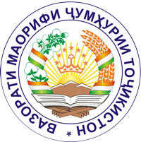

About Us
The USAID Read With Me Project supports Goverment of Tajikistan and the Ministry of Education and Science's continuing efforts to reform the education sector as outlined in the National Strategy for Educational Development (2016-2020).
 |
 |  |
| USAID Sponsor |
Ministry of Education and Science supports the project |
Chemonics international Inc. Implementing organization |
Officers
 |
|
| Lutfullo Boziev Regional Education Specialist |
Sirojidin Alimov Monitoring & Evaluation/Logistics Coordinator |
Project goals and achievements
The primary goal of the USAID Read With Me Project is to improve the reading skills of primary grade students in targeted schools throughout Tajikistan. The five-year project will increase the availability of quality reading materials; provide in-service training for teachers on reading and assessing students progress; create innovations and parthnerships that support literacy outcomes; and increase government support for reading.
The USAID "Read With Me" project coordinates all activities with the Ministry of Education and Science in Khatlon with the Kulob Education Department and its Kulob branch, branches of the Republican Institute for advanced training and retraining of education in Bokhtar and Kulob, including close relationship with the district's education departments. Training activities were conducted with primary school counselors of these structures and with the structures of the Ministry.

Over the life of the project, USAID Read With Me Project work with 75 percent of schools, teachers, and students in the regions of Khatlon, Sughd and Badakhshon, the Districts of Republican Subordination, and Dushanbe.

The project will also support out-of-school reading activities by engaging families, communities, and private sectors. In all activities, the project applies gender equality and inclusive education approaches, including those for children with disabilities.
EXPECTED RESULTS:
- Procure and develop approximately 850,000 age-appropriate primary reading and supplementary materials in Tajik and Russian that support competency-based reading standards.
- Improving the professional skills of 75% of primary school teachers through professional development and teachers' skills in teaching reading techniques, as well as pedagogical support and professional education institutions.
- Support extracurricular activities that promote a culture of reading in the community.
- Development of innovative methods that ensure the development of reading skills of primary school students.
- Establishment of partnerships aimed at the development of educational achievements, resulting in better access to quality educational materials and a better learning environment.
- Develop a dialogue on the importance of learning and improving reading skills.
- Strengthen the professional capacity of education staff at all levels in order to provide educational institutions with the necessary materials to improve learning achievements, including conscious reading.
Since January 2018, the project "Let's read together" has cooperated with 435 secondary schools and achieved the following results:
- 2,248 primary school teachers from 435 schools were trained in modern teaching methods. Of these 2,248 teachers, 859 received additional training as trainers so that they could teach other primary school teachers who did not have the opportunity to participate in the training in their schools.
- 423 principals and 450 librarians of 435 schools were trained to provide opportunities for their students to acquire and develop their reading skills through school and library activities and close cooperation with parents to support this goal.
- In order to provide educational institutions with age-appropriate children's literature for their primary school students, the Read Together Project distributed a total of 57,110 books to 435 schools. Of these, 47,382 books were distributed in Tajik and 9,728 books in Russian. All non-Russian language schools received a set of children's literature in Russian (19 items).
- 720 books were distributed to 3 summer camps in the region.
- The “Let's Read Together” project trained 65 representatives of regional education departments, district education departments, regional branches of the Institute of Advanced Training and Retraining of Education, pedagogical universities and schools of the region as national and regional trainers of the program.
- The project has trained 870 school-level guides to strengthen and support school-level training.